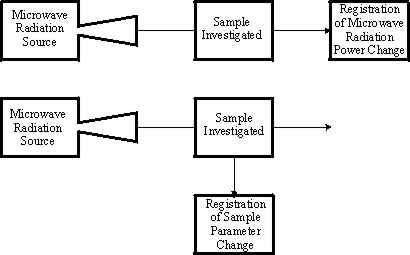
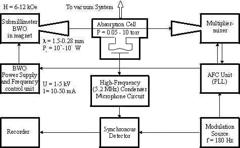
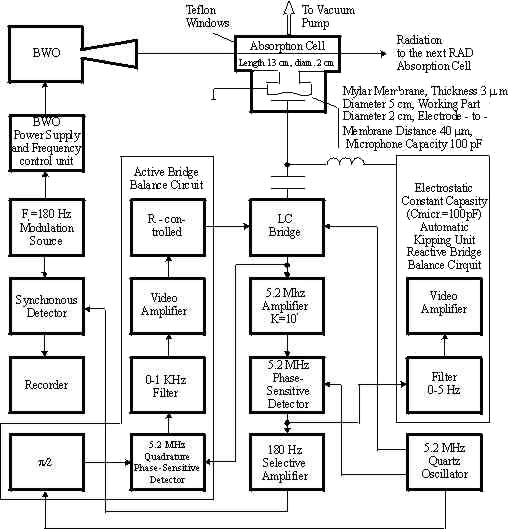

Instruments RAD Spectrometer
Detailed description RAD Spectrometer
Detailed description
Submillimeter-Wave Spectrometer with a BWO and the Acoustic Detector (RAD)
Spectrometer Classification
All existing spectrometers may be divided into two main
classes (Fig. 1) according to two methods of obtaining the signal from the
spectral lines of the sample investigated. The first method involves registering
the change in microwave radiation power after passage through the sample; the
second involves registering the change in one or more sample parameters under
the action of the radiation. Considering the region of spectrometer operation
close to the sensitivity limit, one may assume that the fraction of power
absorbed by the sample Ps is small, i.e.,
Ps<<P0 , where P0 is
the microwave radiation source power. Thus, in the first class of spectrometers
the useful signal Ps must be observed in the presence of a
large (noninformative) background P0, and this is the
main source of sensitivity-decreasing phenomena (including the increase of
noise, appearance of false signals, etc.).
The microwave spectrometers commonly
used are devices of the first class and the above circumstances limit their
absorption coefficient sensitivity to a value of the order of 10-10
cm-1 at a time constant of 1 sec, and limit the allowed power to a
value of 10-3 W. Spectrometers of the second class look more
promising since the null signal detection principle for the microwave power is
intrinsic to them, and only the useful signal Ps is
registered. The detector noise in the absence of spectral lines does not depend
on the radiation power passing through the sample and the absorption coefficient
sensitivity increases at a rate proportional to the radiation power up to power
levels causing transition saturation or breakdown in the gas.
The absence of
detector reaction outside the spectral lines also eliminates false signals. As a
result, the absorption coefficient sensitivity of microwave spectrometers of the
second class (when powerful enough radiation sources are used) may significantly
exceed the aforementioned figure of 10-10 cm-1 at a time
constant of 1 sec.

Fig.1.
General description
In the RAD (Fig. 2) the radiation of the primary monochromatic submillimeter source — the BWO — passes through one or several successively placed cells containing the gases investigated and is then directed to the mixer-multiplier of the BWO stabilization and frequency measurement system. When the radiation frequency coincides with the frequency of the spectral line the gas absorbs the power, heats, and produces a pressure increase in the cell (gas sounding when absorbing modulated radiation was discovered at the end of the nineteenth century).

Fig.2.
The amplitude or frequency of the BWO radiation is modulated
with an audio range modulation frequency. The spectral component of the gas
pressure variations at the modulation frequency is the signal from the
absorption line registered by the sensitive microphone placed in the cell. After
amplification and synchronous detection the signal is recorded. The BWO
radiation frequency may be scanned electronically by approximately an octave,
which permits making a record of the absorption spectrum of the gas. According
to the classification given above, the RAD belongs to the second class of
spectrometers because of the manner of signal formation from the line.
This leads (besides the aforementioned possibility of a
sensitivity increase) to the following properties important in practice: (i) the
use of high power radiation sources without an increase in receiver noise opens
new perspectives in nonlinear spectroscopy; (ii) the thermal volume "null"
signal detection provides independence of the sensitivity on the radiation
frequency and the absence of false signals from interference effects, which in
conjunction with electronic control of the BWO frequency permits carrying out
automatic records of broad parts of the spectrum; (iii) the signal formation
(for the majority of spectral lines) from a small fraction of the radiation
power passing through the cell permits making simultaneous independent records
of several gas spectra in several absorption cells with microphones, and the
utilization of the full radiation power passing through the cells in the system
for stabilization and measurement of the BWO frequency.
Cell and detector (receiver)
Device 004
The gas cell, microphone, and electronic
detector circuit (Fig. 3) must provide the maximum signal-to-noise ratio for
weak lines (g l < < 1) for given resolving power of the
spectrometer and radiation power passing through the cell
circuit.

Fig.3.
The conditions for maximum condenser microphone output signal by the microphone placed in the cell are:
wMt cell » 1 (1)
m = ppR4/8VT* » 1 (2)
Equation (1) relates the angular modulation frequency (wM) and the time constant of the thermal processes
tcell, and provides maximum amplitude of gas
pressure variations. Equation (2) relates the gas and membrane elasticities and
provides the most effective transformation of the pressure variations into
membrane displacements. Calculations are made for the real case in which the
membrane elasticity is defined by its initial tension and the frequency of free
oscillations of the membrane in vacuum is much greater than the modulation
frequency. Here p is the gas pressure, V is the cell volume,
R and T* are the radius and initial tension of the membrane
(T* is the force per unit edge length). Analysis of these matching
conditions and the expression for the signal strength obtained in this case
permit the following conclusions: (i) When the matching conditions are
fulfilled, the signal increases slowly with decreasing modulation frequency. The
minimum modulation frequency is then defined by environmental noise. (ii) The
operating pressure is sufficiently strictly defined by the desired resolving
power of the spectrometer. Hence from Eq. (1) we obtain the value of the
smallest (transverse) dimension of the cell. (iii) For given membrane parameters
the signal strength increases with increasing cell length only up to a value
defined by Eq. (2). Upon further increasing the cell length, the signal strength
is saturated. (iv) The dependence of the matching Eqs. (1) and (2) on the gas
pressure leads to the dependence of the output signal on pressure.
The realization of the matching condition m » 1 at small gas pressures is the most difficult problem in
practice, even when rather thin membranes are used (a membrane is stiffer than
gas, m <<1). In this case the signal
drops proportionally to m. The maximum close approach to fulfillment of
Eq. (2) is very desirable from the point of view of requirements for the
sensitivity of the electronics circuit.
The spectrometer output noise is defined by the thermal
fluctuations of the microphone membrane in the gas (both due to inherent
Brownian motion of the membrane and to Brownian motion of the gas) and by the
inherent noise of the electronics circuit. The limiting sensitivity of the
spectrometer is obtained when the thermal fluctuations of the membrane are
defined preferably by Brownian motion of the gas. In this case the parameters
are practically unrestricted, since the gas noise and the signal are similarly
transformed into membrane displacements. Only the weak dependence on the cell
length remains. The signal-to-noise ratio increases as l1/2,
because the effective volume thermal noise sources do not correlate between each
other, but the signal sources do. In the absence of line saturation for T =
300°K, l = 10 cm, an integration time of 1 sec, and a typical gas
thermal conductivity, one may obtain the following estimate for the limiting
absorption coefficient sensitivity of the RAD:
g min(cm
-1) » 4 x
10-11/P0 (3)
where P0 is in watts. An analogous estimate
may be obtained more roughly using Eq. (4) and the expression for the signal
power Ps»g lP0 . Let us
consider the possibilities of achieving this ultimate sensitivity.
The rms displacement of the center of the membrane due to
fluctuations connected with Brownian motion in the gas (at wMtcell»1, m<<1) in the
receiver bandwidth Dwrec near the modulation
frequency is equal to
sg»(1/4p)(kTm Dwrec/T* Dwcell)1/2 (4)
and that due to the inherent membrane Brownian motion is
sm»(1/p)(kT Dwrec/2QMWT*)1/2 (5)
Here W and QM are
the resonant frequency and quality factor of the membrane as a mechanical
oscillator in vacuum. For the parameter values QM» 5x102, W»104 sec-1, m» 10-2, and Dwrec»103
sec-1, the ratio sg/sm , is nearly 2.5 and the order of magnitude of
sg is 5x10-5 Angstrom.
The electronic circuit must register these rather small
fluctuation displacements of the membrane with very weak tension. When the cell
is evacuated and filled with the gas to be investigated, considerable
displacements of the membrane may occur. These must not influence the
sensitivity of the microphone and circuit in the subsequent operation. The most
suitable circuit for fulfilling these conditions is the high-frequency bridge
condenser microphone circuit with the microphone capacity included in one
resonant bridge arm. It will be shown below that the sensitivity of such a
circuit is sufficient for detection of gas fluctuations. The use of an automatic
bridge balance along two coordinates (microphone capacity by electrostatic
control of the membrane position, the circuit losses by an electrically
controlled resistor) provides constant sensitivity of the microphone and the
circuit.
When the bridge is fed by a quartz oscillator with a
sufficiently pure spectrum, then the noise in the narrow sidebands Dwrec at the frequencies wq±wM is
caused only by thermal fluctuations in the resonant bridge arms and the circuit
sensitivity is equal to
sc»(1/Q)(8/p)(1/2)(kT
Dwrec/Pq)1/2d
(6)
Here wq is the quartz
oscillator frequency, Q is the quality factor of the microphone resonant
circuit at the frequency wq,
Pq is the power dissipated in this circuit, d is the
distance between the membrane and the other electrode of the microphone. The
value Q is defined by the losses in the thin conductive layer on the
membrane and is approximately equal to 102. The value
Pq may be increased until the electrostatic attractive force
between membrane and electrode is compensated by the membrane tension. The
condition for membrane stability loss is
d/Pq1/2=(Q/4pwq T*)1/2 (7)
and when the value d/Pq1/2 is near
the optimal from Eqs. (6) and (7), one has
sc
» (1/p)(2kT Dwrec/Qwq T*)1/2 (8)
Assuming membrane fluctuations to predominate over fluctuations
of the circuit, one may obtain the condition for wq. In practice we require wq >=106 Hz, which is easy
to fulfill.
The relatively small dimensions of the RAD absorption cells in
comparison with the cells of common microwave spectrometers have some advantages
for a number of investigations (free radicals, Stark and Zeeman effects, etc.).
At present, the experimentally obtained RAD sensitivity is equal to
gmin(cm-1)»6x10-11/P0 (9)
(with P0 in watts), which is rather close to the
theoretical value in Eq. (3). In particular, at the wavelength of 0.75 mm, where
the BWO power is near 10 mW, the sensitivity of 6x10-9 cm-1
is obtained.
Example of application of simplest version of RAD spectrometer (see diagram in Fig. 3 above) for broad-band high resolution spectroscopy.
Example of record demonstrating
RAD spectrometer sensitivity.
Example of broadband study of molecular spectrum using submillimeter frequency synthesizer and RAD gas cell (see diagram in Fig. 2 above) - Teraherz spectrum of oxygen .
Example of lineshape, line broadening
and line shifting studies with BWO based submillimeter-wave frequency synthesizer
with RAD gas cell (see diagram in Fig. 2 above).
|